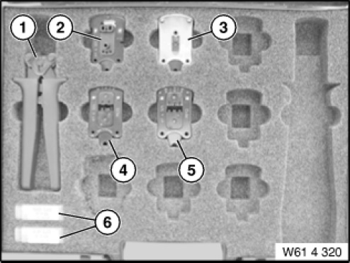

61 4 320 Crimping Tool
61 4 320 Crimping Tool
0494158
Minimum set: Mechanical tools
MP

NOTE: (Crimping set with pliers) For optical fibres and cable repairs. As from 06/2006 extended by universal crimping head 61 4 328, see SI 2 04 06 293. As from 03/2010 61 4 328 will be removed from the set and can be ordered separately under 61 4 340, see SI 02 01 10 615. As from 03/2010 61 4 322 will be replaced by 61 4 329. As from 03/2010 61 4 326 will only be available as a replacement. [Released]
SI number: 01 14 01 (766)
Consisting of:
2 = 0494160 Crimping tool
NOTE: (Crimping head) For stripping insulating and cutting optical fibre to length Replaced as from 03/2010 by 61 4 329, see Service Information (bulletin) 02 01 10 (615). Replaced by 61 4 329 (0 496 847) [Replaced]
2 = 0496847 Crimping tool
NOTE: Replacement for SWZ 61 4 322 as of 03/2010 Discontinued, only available via complete tool [Discontinued]
7 = 0494320 Supplement
NOTE: (Replacement knife) With tool for changing blades in stripping unit. Must be ordered separately, not included in 61 4 320 delivery specification. Discontinued as from 03/2010, see SI 02 01 10 (615). [Discontinued]
8 = 0495555 Crimping tool
NOTE: (Universal crimping head) For crimping contacts (without seal) and cable cross-sections from 0.35 - 2.5 mm, see SI 2 04 06 293. As from 03/2010 61 4 328 will not longer be supplied in set 61 4 320. Order by way of separate special tool number 61 4 340, see SI 02 01 10 615 [Discontinued]
1 = 0494159 Handle
NOTE: Basic handle for crimping heads [Released]
3 = 0494161 Crimping tool
NOTE: (Crimping head) For crimping optical fibre contacts [Released]
4 = 0494162 Crimping tool
NOTE: (Crimping head) For crimping MQS contacts [Released]
6 = 0494164 Supplement
NOTE: (Replacement blade) For face-cutting optical fibres. As from 03/2006, no longer included in set 61 4 320, but individually available as a replacement, see SI 02 01 10 (615) [Released]
5 = 0494178 Crimping tool
NOTE: (Crimping head) For crimping MPQ contacts [Released]